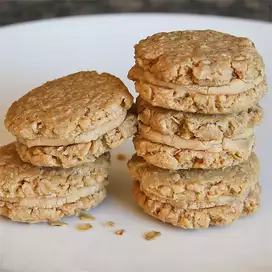

Oatmeal Peanut Butter Cookies III

Imagine : A smooth, rich peanut butter cream sandwiched between two delicious, soft oatmeal peanut butter cookies.
Pure bliss.
Ingredients
- 3/4 Cup All-Purpose Flour
- 1/2 Teaspoon Baking Soda
- 1/4 Teaspoon Baking Powder
- 1/2 Teaspoon Salt
- 1/2 Cup Butter, Softened
- 1/2 Cup Peanut Butter
- 1/2 Cup White Sugar
- 1/2 Cup Packed Light Brown Sugar
- 1 Egg
- 1 Teaspoon Vanilla Extract
- 1 Cup Quick Cooking Oats
- 3 Tablespoons Butter, Softened
- 1 Cup Confectioners' Sugar
- 1/2 Cup Smooth Peanut Butter
- 2 1/2 Tablespoons Heavy Whipping Cream
Directions
- Step 1 : In a large bowl, cream together 1/2 cup butter, 1/2 cup peanut butter, white sugar, brown sugar, and vanilla. Add egg and beat well.
- Step 2 : In another bowl, combine the flour, baking soda, baking powder, and salt. Add these dry ingredients to the creamed mixture. Stir. Add oatmeal and stir.
- Step 3 : Drop by teaspoons onto greased baking sheet, and press each mound down with a fork to form 1/4 inch thick cookies. Bake at 350 degrees F (175 degrees C) for 10 minutes, or until cookies are a light brown.
- Step 4 : To Make Filling : Cream 3 tablespoons butter with the confectioners' sugar, 1/2 cup smooth peanut butter, and the cream. Spread filling onto half of the cooled cookies, then top with the other half to form sandwiches.
Recipe Credit : Joanne Reaney on AllRecipes